- O nama
početna stranica - Apartmani
naši apartmani - Autokamp
autokamp - Turanj
o mjestu Turanj - Fotografije
fotografije plaža i okolice - English
in english
Fotografije
 Turanj iz zraka
Turanj iz zraka- 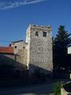 Kaštel
 Zvonik
Zvonik- 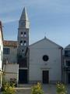 Crkva
 Centar Turnja
Centar Turnja Plaža ispod naše kuće
Plaža ispod naše kuće- 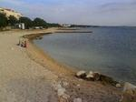 Plaža ispod naše kuće
- 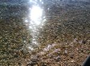 Plaža ispod naše kuće
- 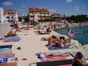 Glavna plaža u centru
- 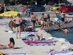 Glavna plaža u centru
 Glavna plaža u centru
Glavna plaža u centru Centar Turnja
Centar Turnja- 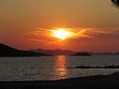 Otočić Bisaga
- 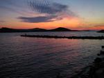 Prizor sa šetnice
- 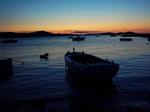 Zalazak sunca
 Zalazak sunca
Zalazak sunca Zalazak sunca
Zalazak sunca- 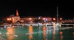 Vaterpolo utakmica
- 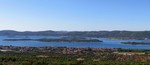 Panorama Turnja
 Turanj iz zraka
Turanj iz zraka Zvonik
Zvonik Centar Turnja
Centar Turnja Plaža ispod naše kuće
Plaža ispod naše kuće Glavna plaža u centru
Glavna plaža u centru Centar Turnja
Centar Turnja Zalazak sunca
Zalazak sunca Zalazak sunca
Zalazak sunca{kind=link}
{kind=link}
{kind=link}
{kind=link}
{kind=link}
{kind=link}
{kind=link}
{kind=link}
{kind=link}
{kind=link}
{kind=link}